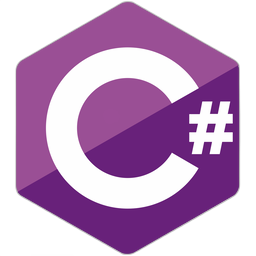

Anasayfa

C# programlama dili için işe yarayacak kaynakların bağlantısı aşağıdadır
Wikipedia
BTK Akademi
oguzhantas.com
azkod.com
yazilim.kodlama.com
YouTube - Enes Bayram
YouTube - Yazılım Teknolojileri Akademisi
YouTube - Murat Yücedağ
YouTube - Engin Demiroğ
YouTube - Bilgisayar Kavramları / Şadi Evren Şeker
YouTube - Kaan Academy